I am a Postdoctor in historical demography at the Centre for Ageing and Demographic Research, Umeå University, working on the study of demographic processes and social networks. In my PhD dissertation, I studied the role of social networks for the Swedish fertility transition, specifically that of voluntary associations and spatial communities.
Main research interests are in historical demography, topic analysis, digital history and R programming.
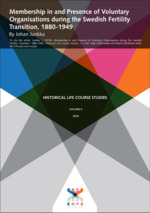 Junkka, Johan. (2018) "Membership in and Presence of Voluntary Organisations during the Swedish Fertility Transition, 1880-1949." Historical Life Course Studies. 5, 3-36. http://hdl.handle.net/10622/23526343-2018-00012?locatt=view%3Amaster
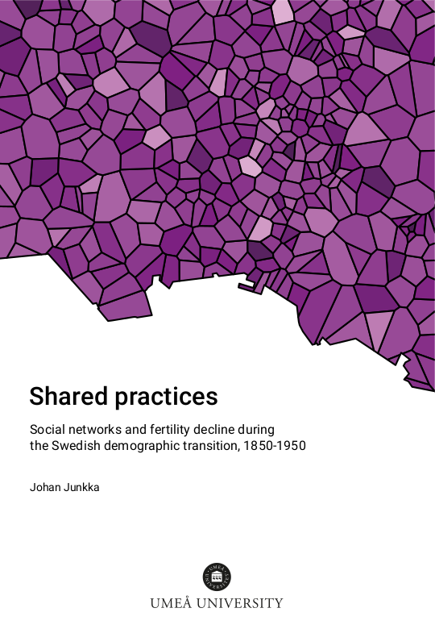 Junkka, Johan. (2018) Shared practices. Social networks and fertility decline during the Swedish demographic transition, 1850-1950. Umeå: Umeå University. http://umu.diva-portal.org
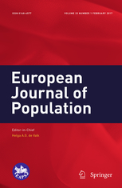 Junkka, Johan. (2018) "Voluntary associations and net fertility during the Swedish demographic transition". European Journal of Population. doi: 10.1007/s10680-018-9465-5
Reproducable analysis github.com/junkka/voluntary-associations
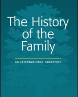 Junkka, Johan and Edvinsson, Sören. (2016) "Gender and fertility within the free churches in the Sundsvall region, Sweden, 1860-1921". The History of the Family. 21(2). doi: 10.1080/1081602X.2015.1043929
Authors copy and reproducable analysis github.com/junkka/freechurchfertility
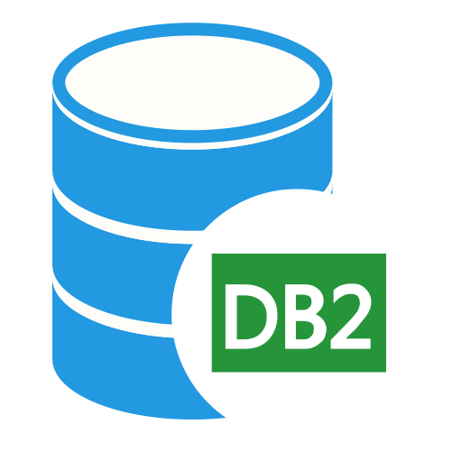 db2connect - Interface for DB2 databases, using the RJDBC package. Integrates with RStudio database connections pane.
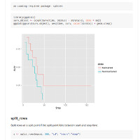 ehahelper - Event history analysis helper package for R, including predict and tidying functions for coxme.
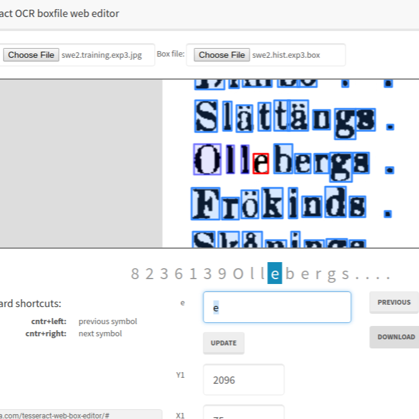 Tesseract OCR boxfile web editor - Web app for editing tesseract OCR box files, using the leaflet maping library and leaflet.draw.
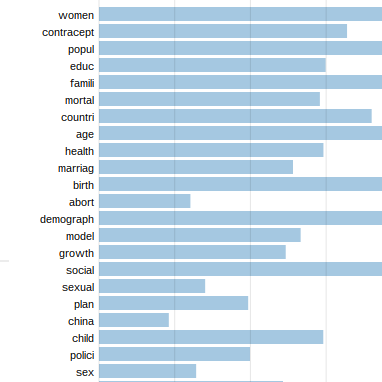 Fertility transition research topic analysis - An interactive exploration of topics in fertility transition research from an LDA analysis of a large collection of scientific abstracts published 1964-2014.
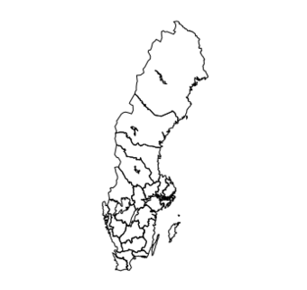 histmaps - A R data package of Swedish historical administrative boundaries for parishes and counties 1634-1990.
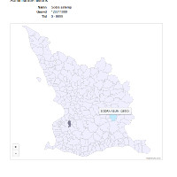 swe-parish - Compilation of information on Swedish historical parishes.
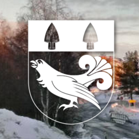Bygdeå - a small village in Västerbotten.
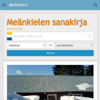meankielensanakirja.com- a dictionary for the minority language Meänkieli.
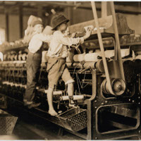 hisco - A R package for classification of HISCO codes to Historical social class systems.
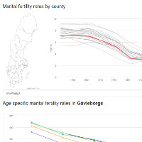 swe-mfrt - Visualization of marital fertility rates by county in Sweden.
Umeå University
Twitter @johanjunkka
GitHub
Until next time ♥